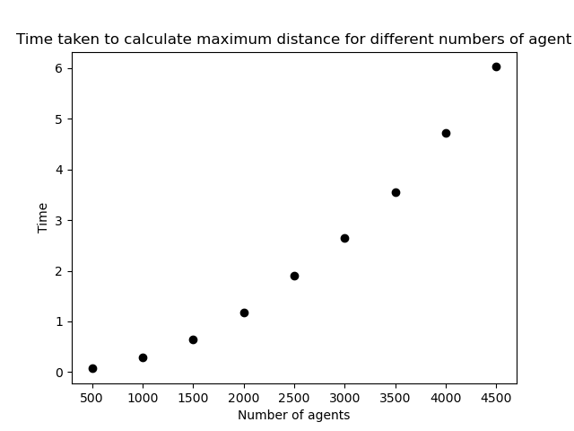

2. Distance Calculations
2.1. Define a Function
Change the distance calculation code into a function named 'get_distance': Use the 'def' keyword and specify four input parameters (x0, y0, x1, y1). Recall that a function declaration ends with a colon ':', and the code of the function must be indented. Return the distance calculated as the last statement of the function using the keyword 'return' followed by the name of the variable that is the calculated distance. After the function write a statement to call it and print out the distance returned.
Run the code to test it works
If your code calculates the square root in two ways, then simplify it by removing one of these ways. Consider simplifying your code in other ways too...
Change the comment that describes the function into a docstring clarifying what the function inputs and outputs are.
2.2. Calculate the maximum distance
Imagine a two dimensional matrix with the agents aligned in the same sequence along each dimension and the distances between them being the values in the matrix. The matrix is symmetrical about a diagonal where all the distances are zero.
The maximum distance between any two agents is the maximum distance in this matrix, indeed it is the maximum distance in one half of the values not on the zero diagonal. Anyway, a pair of nested for loops can be used to calculate it: An outer loop that iterates over all agents; and an inner loop that iterates over all agents. Within the inner loop the get_distance function can be used to calculate the distance between a pair of agents (one from the outer loop and one from the inner loop), and the builtin max function can be used to calculate the maximum distance encountered yet. The following code does this:
max_distance = 0 # Initialise max_distance
for a in agents:
for b in agents:
distance = get_distance(a[0], a[1], b[0], b[1])
print("distance between", a, b, distance)
max_distance = max(max_distance, distance)
print("max_distance", max_distance)
Add the code to the end of your program, run it and examine the output. In calculating the maximum distance, you should see that some zero distances are calculated. These will either be where an agent is located at the same place as another agent, or where the calculation is for the same agent - the diagonals in the imaginary matrix.
Recall that there are two main ways to iterate over the items in a list. As above, and alternatively using list indexes. The following code does the same calculation, and uses the range function to get a sequence of indexes:
max_distance = 0
for i in range(len(agents)):
a = agents[i]
for j in range(len(agents)):
b = agents[j]
distance = get_distance(a[0], a[1], b[0], b[1])
print("distance between", a, b, distance)
max_distance = max(max_distance, distance)
print("max_distance", max_distance)
Note that this code uses variables 'i' and 'j' for the indexes, and the len functionto get the length of the agents list. (Here, 'len(agents)' is the same as 'n_agents', which could be used instead (and would be more efficient). Change this if you want, but consider what would happen if the length of the agents list gets changed in the model.)
Write a function called 'get_max_distance' that returns the maximum distance between all the agents.
Your 'get_distance' function should look something like:
def get_distance(x0, y0, x1, y1):
"""
Calculate the Euclidean distance between (x0, y0) and (x1, y1).
Parameters
----------
x0 : Number
The x-coordinate of the first coordinate pair.
y0 : Number
The y-coordinate of the first coordinate pair.
x1 : Number
The x-coordinate of the second coordinate pair.
y1 : Number
The y-coordinate of the second coordinate pair.
Returns
-------
distance : Number
The Euclidean distance between (x0, y0) and (x1, y1).
"""
# Calculate the difference in the x coordinates.
dx = x0 - x1
# Calculate the difference in the y coordinates.
dy = y0 - y1
# Return the Sum the squared differences square rooted.
return ((dx * dx) + (dy * dy)) ** 0.5
Use your 'get_max_distance' function to calculate the maximum distance between all the agents just after they have been initialised.
If a NameErroris raised indicating that 'get_max_distance' is not defined, then recall that the Python interpreter needs to have read a function definition before it can be called. So, rearrange your code so that the function is defined before it is called.
3. Timing
This section is about using the time module to report timings and explore code efficiency.
Save your source code file with a new name, for example "timing.py".
Add the following import statement along with the others towards the top of the source code:
import timeBefore calculating the maximum distance between the initialised agents add the following line:
start = time.perf_counter()This sets the variable 'start' to a time variable which is the number of second since the computer was last rebooted. After calculating the maximum distance add the following code to calculate and report a time interval:
end = time.perf_counter()
print("Time taken to calculate maximum distance", end - start,
"seconds")
Run your program and check the time taken to calculate maximum distance. (It could report '0.0' seconds for 10 agents. This does not mean that the processing took no time, but that it was very quick and closer to zero milliseconds than one.)
The plan in this part is to explore the following two things:
- How does the processing time scale as 'n_agents' increases?
- Other potentially more optimal ways of calculating the maximum distance between agents.
Increase 'n_agents' to 500 and run the program again. Notice that the plotting is a little delayed and printing out the agents now clutters the text output.
As printing and plotting are slow and can effect timings significantly, comment out the code for printing agents and the code for plotting agents.
Run your program again. It should now be easy to see the time taken to calculate the maximum distance between agents, which is expected to take a fraction of a second.
Run again and compare the timing. It is normal for the timing to vary slightly from one run to another. The amount of computation is the same, but the exact timing depends on other things that are hard to control for - such as how busy the computer is doing other things.
Adapt your code:
- Create a loop to run for a range of n_agents.
- Create a list to store timing results.
- Create a plot with time on one axis and n_agents on the other.
Experiment with your range function to get an interesting plot.
Spend at least 15 minutes trying to do this coding. If you manage to do it within this time, then great, if not, then don't worry. Having tried, compare your efforts with this solution that produces the following results:
Maximum distance between all the agents 133.64505228402584 Time taken to calculate maximum distance 0.1642232000012882 Maximum distance between all the agents 137.17871555019022 Time taken to calculate maximum distance 0.5503714999940712 Maximum distance between all the agents 137.90213921473443 Time taken to calculate maximum distance 1.23476789999404 Maximum distance between all the agents 138.6001443000692 Time taken to calculate maximum distance 2.1861126000003424 Maximum distance between all the agents 137.90213921473443 Time taken to calculate maximum distance 3.4285349999991013 Maximum distance between all the agents 139.30183056945089 Time taken to calculate maximum distance 4.966505299991695 Maximum distance between all the agents 139.30183056945089 Time taken to calculate maximum distance 6.7055035999946995 Maximum distance between all the agents 139.30183056945089 Time taken to calculate maximum distance 8.90659329999471 Maximum distance between all the agents 140.0071426749364 Time taken to calculate maximum distance 11.068045900014113

Attempt to optimise the calculation of the maximum distance between all the agents as follows: Modify your code so that 'n_agents = 3', and add the following print statement to the inner loop of the 'get_max_distance' function:
print("i", i, "j", j)
Run the code and you should see the following printed in the text output:
i 0 j 0 i 0 j 1 i 0 j 2 i 1 j 0 i 1 j 1 i 1 j 2 i 2 j 0 i 2 j 1 i 2 j 2
Change what is in the inner loop of the 'get_max_distance' function to be within an if statementthat is only run when 'i' does not equal 'j' using the operator '!='. The 'if statement' will look like:
if i != j:
Run the program again and you should see the following in the console output:
i 0 j 1 i 0 j 2 i 1 j 0 i 1 j 2 i 2 j 0 i 2 j 1
Compare this output with the previous run output: There is less output, as when the indexes are the same, the calculations are skipped.
Comment out the print statement and run the code for 'n_agents = 1000'. Compare the processing time with/without the 'if statement'.
The timing is probably about the same and may be more with the if statement, because the 'if statement' condition is evaluated every iteration of the inner loop and only filters out the need for calculation of the n_agents distances that are along the zero diagonal of the imaginary distance matrix.
Modify the code again so that: 'n_agents = 3'; the print statement that was commented out is no longer commented out; and, so that the operator in the 'if statement' is a '<'):
if i < j:Run the program again and you should get the following output:
i 0 j 1 i 0 j 2 i 1 j 2
Understand that the maximum distance can be calculated by finding the maximum distance between the coordinates as indexed. It may help you appreciate this if you run for 'n_agents = 5' or 'n_agents = 10' and analyse the output.
Comment out the print statement again and record timings again for 'n_agents = 1000'. You should get the same max_distance result calculated previously, but the processing time should be roughly half.
An even faster way involves modifying the loops and removing the 'if statement'. Can you work out how to do it? (Hint: Change the range function of the inner for loop to start at index i + 1).
Once you've given this a try, compare your answer with this one in which the code has been simplified a little and the following graph of results was obtained:

4. Other distance statistics
In calculating the maximum distance, a lower bound of 0 was used to initialise the max_distance variable. To calculate the minimum distance, then either an upper bound is wanted, or the initial minimum distance should be set to be a distance between any two different agents. The upper bound of the distance between two agents in Euclidean space is theoretically infinite.
From the math module the following can be used for positive infinity:
math.inf
Write a function that calculates the minumum distance between all the agents and record timings of how long it takes to calculate both the maximum and minimum distances using the two different functions.
Develop a function that calculates both the minimum and maximum distances using a single set of nested loops and returns the result in a tuple. You should find that it is significantly quicker to calculate both the maximum and minimum this way rather than looping through things and calculating the distances twice. Write a brief document about the timings to show that calculating both the minimum and maximum distances using a single set of nested loops is more efficient. Commit this document to your repository along with your code.
As well as the maximum and minimum distance, you might want to calculate other statistics, such as the average distance.
The arithmetic mean average can be calculated with one run through the data. To calculate the standard deviation of distances, it is first necessary to know the arithmetic mean. So, it is necessary in calculating the standard deviation to iterate over the data values at least twice, once to calculate the mean and again to sum some difference of values from the mean. The median and mode could be calculated with a single run through the data. For calculating the median the data needs to be sorted. Calculating the mode of a continuous variable is often not useful. Anyway, for a mode calculation, a dictionary can be used to store a count for each value and then return the value for which the count is highest.
Practising calculating such summary statistics from first principles is a good way to develop programming skills, so if you want the extra practise then have a go. Perhaps try calculating a truncated mean of distances ignoring a proportion of the highest and lowest distances. Think about how you would test to ensure your code produces correct results.
Replace the get_max_distance() in model.py with the new faster version you have developed.
Add and commit to your local git repository and assuming you are using GitHub - push your changes to GitHub.
5. Movement
Currently, in 'model.py' agents move once. The code will now be changed to move them a number of times. After initialising 'n_agents', initialise a variable called 'n_iterations' and set it equal to 1000.
Create a new outer for loopto loop through moving agents n_iteration times. An outer loop is wanted rather than an inner loop as in each iteration agents are to move in turn rather than each agent taking all their turns before any others. This outer loop is the 'main simulation loop'. Add a comment to identify it as such.
The agents move randomly, and the more of them there are, the more spread out they are likely to become.
Edge effects are important to consider in geographical data analysis and modelling. The agents currently have a theoretically infinite two dimensional (2D) area to move in. To make things more manageable, movement will be restricted to a rectangular area by limiting the x and y coordinates using the following code blocks:
# Variables for constraining movement.
# The minimum x coordinate.
x_min = 0
# The minimum y coordinate.
y_min = 0
# The maximum x coordinate.
x_max = 99
# The maximum y coordinate.
y_max = 99
# Apply movement constraints.
if agents[i][0] < x_min:
agents[i][0] = x_min
if agents[i][1] < y_min:
agents[i][1] = y_min
if agents[i][0] > x_max:
agents[i][0] = x_max
if agents[i][1] > y_max:
agents[i][1] = y_max
Insert the first code block at the top of 'model.py' with the other initialised variables. Insert the other code block as part of moving each agent.
After having moved each agent, the code could loop through the agents again to constrain movement, but this would be less efficient than constraining within same loop as moving each agent.
Add and commit to your local git repository and assuming you are using GitHub - push your changes to GitHub.